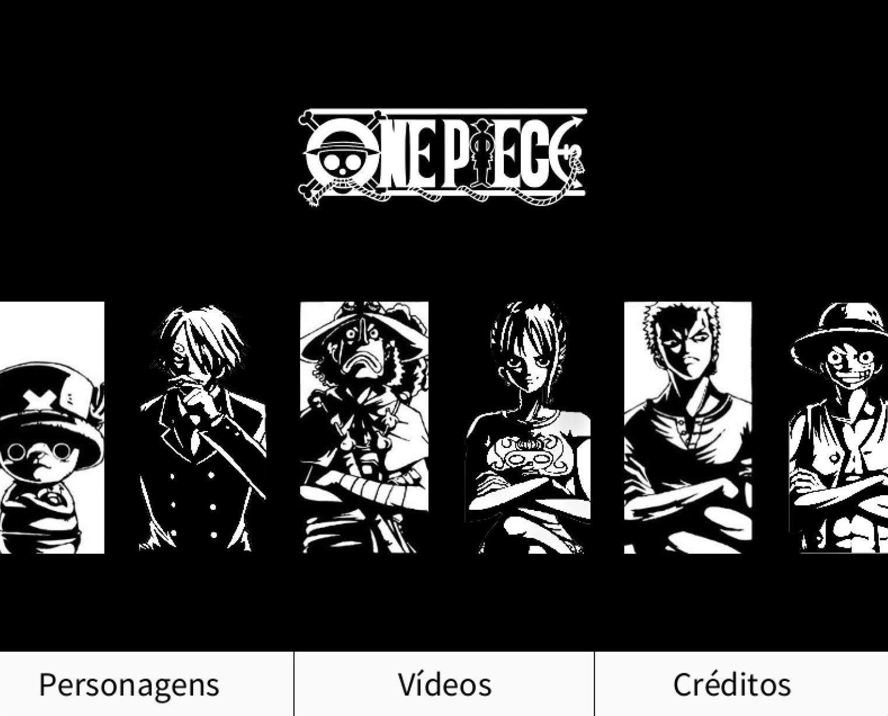
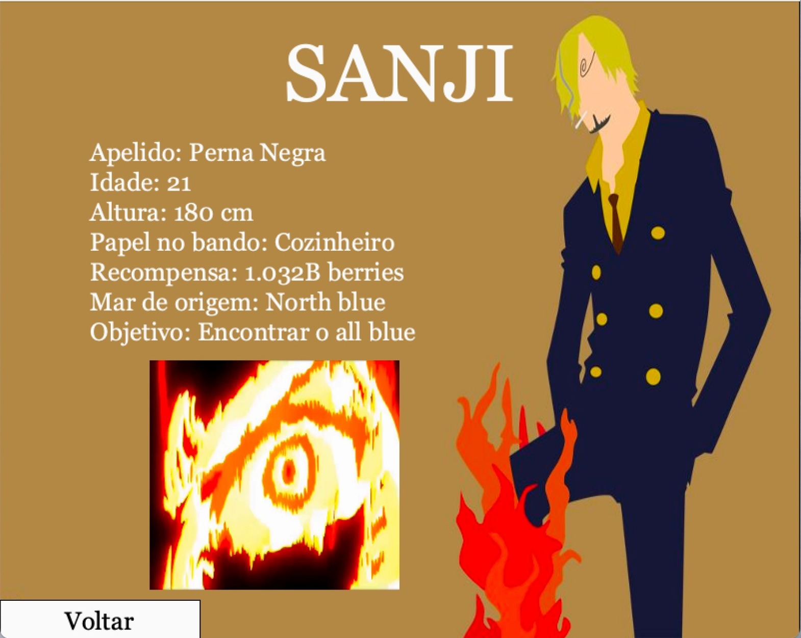
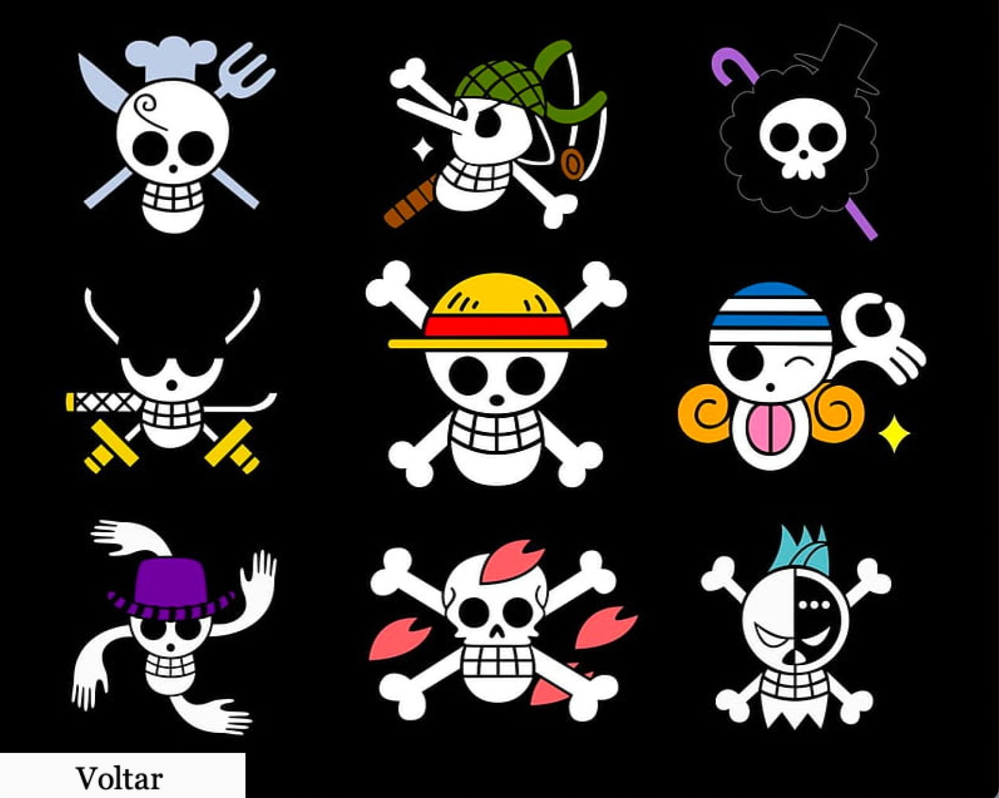
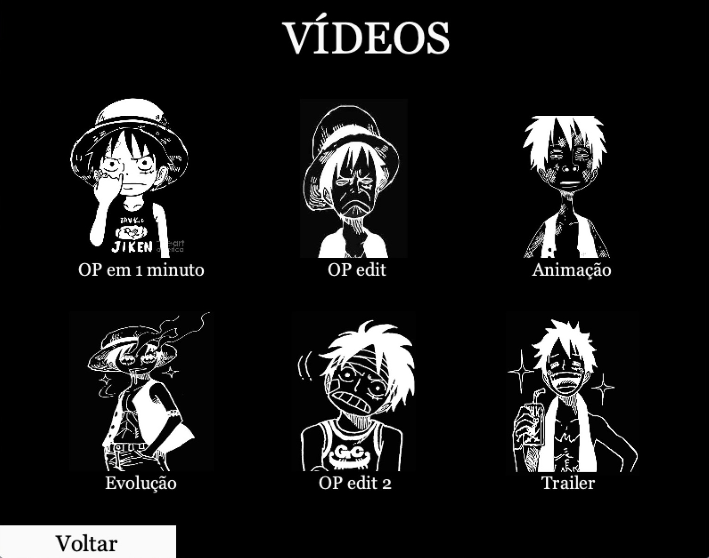

O APP foi feito usando a ferramenta Processing 4, e é sobre o maior anime do mundo, "One Piece". Tendo
mais de 1000 episódios, o show acompanha uma tripulação de piratas que enfrentam o mundo para obter o maior
tesouro do mundo e tornar seu capitão no rei dos piratas.

O APP possui vários recursos e ferramentas, como músicas, vídeos, imagens, animações e muitos outros.
Cada personagem possuí uma página
específica, que apresenta seus detalhes e informações. Além disso, cada um possui uma
imagem e um gif específico em suas páginas, o que torna o APP mais dinâmico e criativo.


Além disso, também adicionamos uma página em que o usuário pode selecionar entre 6 vídeos, que variam de
introduções ao anime a "edits" de personagens. O APP em si foi programado de forma que chame a atenção tanto
daqueles que ainda não foram apresentados ao show quanto daqueles que já.
